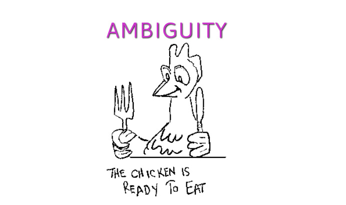
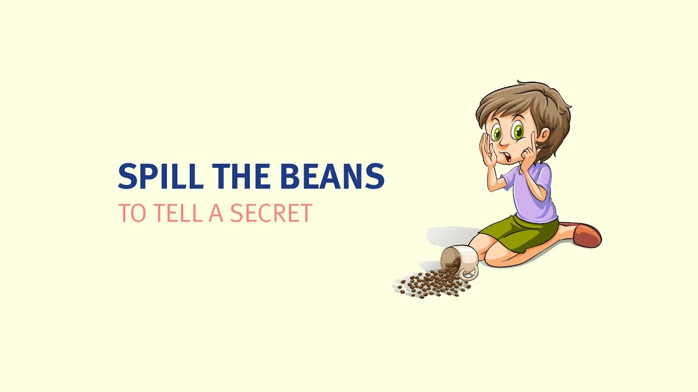
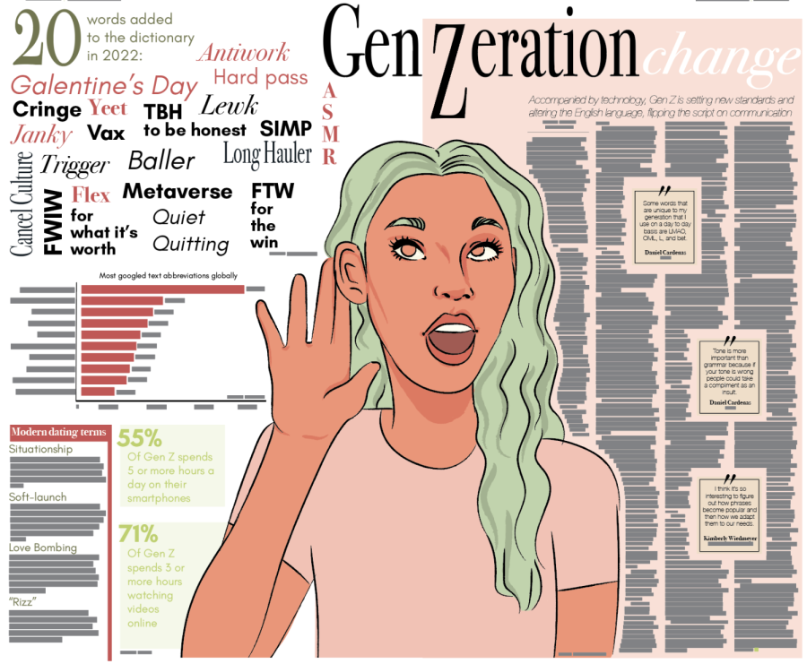

1.2. What is the Natural Language?
1.2.1. Natural Language
Natural language refers to the system of communication used by humans in everyday interaction, such as English, Polish, or Mandarin Chinese, and is distinct from artificial systems like programming languages or formal logic.
As Crystal (2010) notes, natural languages are characterized by:
1. ambiguity,
2. variability,
3. and context-dependence,
which allow them to be both flexible and expressive.
For example, idiomatic expressions such as “kick the bucket” in English or “wpaść jak śliwka w kompot” (“to fall like a plum into compote.”) in Polish cannot be understood through literal translation but are widely recognized by native speakers, illustrating the cultural and semantic richness of natural language (Saeed, 2015). Chomsky (1965) emphasized that natural languages are generative systems, enabling speakers to produce infinitely many new and grammatically valid sentences, such as “It’s cold outside, maybe bring a jacket,” which convey meaning even in imprecise and context-dependent forms.
1.2.2. Non-natural Language
Non-natural languages are deliberately constructed systems of communication that contrast with natural languages, which emerge organically in human societies. They include formal languages used in mathematics, logic, and computer science (such as programming or markup languages), constructed languages created for international communication or fiction (like Esperanto, Klingon, or Quenya), and controlled natural languages, which are simplified versions of existing languages designed to minimize ambiguity and improve machine readability. Symbolic systems in mathematics and science, such as algebraic notation or chemical formulas, also fall into this category. Unlike natural languages, which evolve through cultural and social processes, non-natural languages are explicitly designed with specific goals in mind, such as precision, universality, or artistic expression (Chomsky, 1956; Eco, 1995; Okrent, 2009).
1.2.3. Computational Perspective
From a computational perspective, these very properties—ambiguity, idiomaticity, and productivity—pose significant challenges for natural language processing (NLP), the field of computer science that develops methods for analyzing and generating human language (Jurafsky & Martin, 2023).
Ambiguity arises at multiple linguistic levels. At the lexical level, a single word may have several distinct meanings, such as “bank”, which can refer either to a financial institution or the side of a river. At the syntactic level, the structure of a sentence can permit multiple interpretations, as in the classic example “I saw the man with the telescope”, which may describe either a man carrying a telescope or the speaker observing a man by means of a telescope. Finally, at the semantic and pragmatic levels, meaning is often dependent on discourse context, background knowledge, and shared cultural assumptions (Jurafsky & Martin, 2023). These forms of ambiguity make computational interpretation inherently difficult, as machines cannot rely solely on surface-level cues.

Idiomaticity introduces another layer of complexity. Expressions such as “spill the beans” in English or “wpaść jak śliwka w kompot” in Polish cannot be understood through literal translation or compositional analysis of individual words. Instead, they require knowledge of figurative language and cultural nuance. Capturing such meaning demands that NLP models move beyond word-by-word analysis to incorporate contextual semantics and usage patterns (Saeed, 2015).

Productivity, defined by Chomsky (1965) as the human ability to generate and understand an infinite number of novel and grammatically correct sentences, also challenges computational systems. Unlike humans, machines cannot rely purely on memorization; they must learn to generalize from finite training data to new and unseen structures.

Historically, rule-based approaches in computational linguistics attempted to address these phenomena through handcrafted grammars and formal rules. While precise, such methods proved rigid and unscalable. Statistical methods, introduced in the 1990s, offered greater robustness and scalability by leveraging probabilities over large corpora, yet often failed to capture deep semantic or pragmatic dimensions of meaning (Manning & Schütze, 1999).
Recent progress in deep learning and large language models (LLMs) has led to remarkable improvements. These systems are capable of capturing contextual and distributional patterns at scale, resulting in significant advances in translation, sentiment analysis, and conversational agents. Nevertheless, major challenges remain unresolved, including systematic bias, limited interpretability, and difficulties in handling rare, domain-specific, or low-resource languages (Bender & Koller, 2020).
In sum, the very properties that make natural language so rich and powerful for human communication—its ambiguity, idiomaticity, and productivity—remain central obstacles for computational modeling, ensuring that NLP continues to be a dynamic and evolving field of research.
References
- Bender, E. M., & Koller, A. (2020). Climbing towards NLU: On meaning, form, and understanding in the age of data. Proceedings of the 58th Annual Meeting of the Association for Computational Linguistics, 5185–5198. https://doi.org/10.18653/v1/2020.acl-main.463
- Chomsky, N. (1956). Three models for the description of language. IRE Transactions on Information Theory, 2(3), 113–124. https://doi.org/10.1109/TIT.1956.1056813
- Chomsky, N. (1965). Aspects of the Theory of Syntax. MIT Press.
- Crystal, D. (2010). The Cambridge Encyclopedia of Language (3rd ed.). Cambridge University Press.
- Eco, U. (1995). The Search for the Perfect Language. Blackwell.
- Jurafsky, D., & Martin, J. H. (2023). Speech and Language Processing (3rd ed. draft). Stanford University. Available at: https://web.stanford.edu/~jurafsky/slp3/
- Manning, C. D., & Schütze, H. (1999). Foundations of Statistical Natural Language Processing. MIT Press.
- Okrent, A. (2009). In the Land of Invented Languages: A Celebration of Linguistic Creativity, Madness, and Genius. Spiegel & Grau.
- Saeed, J. I. (2015). Semantics (4th ed.). Wiley-Blackwell.
- https://thedispatchonline.net/17529/indepth/genzeration-change/